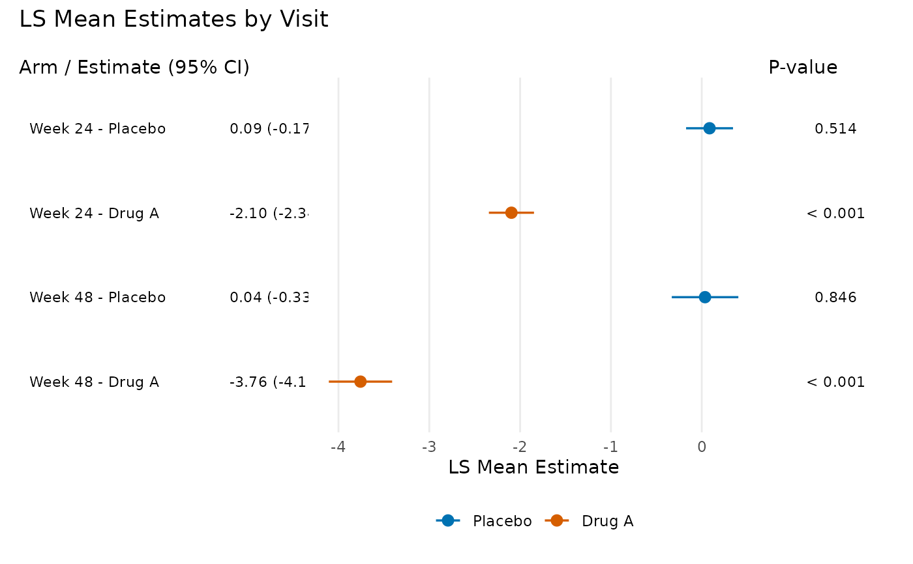

Takes an rbmi pool object and produces a publication-quality, three-panel forest plot using ggplot2 and patchwork. The plot displays treatment effect point estimates with confidence interval whiskers, an aligned table panel showing formatted estimates, and a p-value panel.
Usage
plot_forest(
pool_obj,
display = c("trt", "lsm"),
ref_value = NULL,
ci_level = NULL,
arm_labels = NULL,
title = NULL,
text_size = 3,
point_size = 3,
show_pvalues = TRUE,
font_family = NULL,
panel_widths = NULL
)Arguments
- pool_obj
A pooled analysis object of class
"pool", typically obtained fromrbmi::pool()after callinganalyse_mi_data().- display
Character string specifying the display mode.
"trt"(the default) shows treatment differences across visits."lsm"shows LS mean estimates by treatment arm with color-coded points.- ref_value
Numeric. The reference value for the vertical reference line. Default is
0fordisplay = "trt"andNULL(no line) fordisplay = "lsm". Set explicitly to override.- ci_level
Numeric. Confidence level for CI labeling. If
NULL(the default), extracted frompool_obj$conf.level. Falls back to 0.95 if neither is available.- arm_labels
Named character vector with elements
"ref"and"alt"providing custom labels for the reference and treatment arms whendisplay = "lsm". IfNULL(the default), uses"Reference"and"Treatment".- title
Optional character string for the plot title.
- text_size
Numeric. Text size for the table and p-value panels. Default is 3.
- point_size
Numeric. Point size for the forest plot. Default is 3.
- show_pvalues
Logical. Whether to display the p-value panel on the right side of the plot. Default is
TRUE. Set toFALSEfor a cleaner two-panel layout without p-values.- font_family
Optional character string specifying the font family for all text in the plot. When
NULL(default), uses ggplot2's default font (typically sans-serif). Applied to allgeom_textlayers and the forest panel theme.- panel_widths
Optional numeric vector controlling the relative widths of the plot panels. When
show_pvalues = TRUE, must be length 3 (table, forest, p-value panels). Whenshow_pvalues = FALSE, must be length 2 (table, forest panels). WhenNULL(default), usesc(3, 4, 1.5)for 3-panel andc(3, 5)for 2-panel layouts.
Value
A patchwork/ggplot object that can be further customized using
& theme() to modify all panels simultaneously.
Details
The function calls tidy_pool_obj() internally to parse the pool object,
then constructs a three-panel composition:
Left panel: Visit labels and formatted estimate with CI text
Middle panel: Forest plot with point estimates and CI whiskers
Right panel: Formatted p-values
Display modes:
"trt"– Treatment differences with a reference line at zero (or customref_value). Significant results (CI excludes reference) are shown as filled circles; non-significant as open circles."lsm"– LS mean estimates by treatment arm, color-coded using the Okabe-Ito colorblind-friendly palette (blue for reference, vermilion for treatment). Points are dodged vertically within each visit.
Customization: The returned patchwork object supports & theme() for
applying theme changes to all panels. For example:
plot_forest(pool_obj) & theme(text = element_text(size = 14)).
Example output (treatment difference mode):

See also
rbmi::pool()for creating pool objectstidy_pool_obj()for the underlying data transformationefficacy_table()for tabular presentation of the same dataformat_pvalue()for p-value formatting rulesformat_estimate()for estimate with CI formatting
Examples
# \donttest{
if (requireNamespace("ggplot2", quietly = TRUE) &&
requireNamespace("patchwork", quietly = TRUE)) {
library(rbmi)
data("ADMI", package = "rbmiUtils")
ADMI$TRT <- factor(ADMI$TRT, levels = c("Placebo", "Drug A"))
ADMI$USUBJID <- factor(ADMI$USUBJID)
ADMI$AVISIT <- factor(ADMI$AVISIT)
vars <- set_vars(
subjid = "USUBJID", visit = "AVISIT", group = "TRT",
outcome = "CHG", covariates = c("BASE", "STRATA", "REGION")
)
method <- method_bayes(
n_samples = 20,
control = control_bayes(warmup = 20, thin = 1)
)
ana_obj <- analyse_mi_data(ADMI, vars, method, fun = ancova)
pool_obj <- pool(ana_obj)
# Treatment difference forest plot
plot_forest(pool_obj, arm_labels = c(ref = "Placebo", alt = "Drug A"))
# LSM display with custom panel widths
plot_forest(
pool_obj,
display = "lsm",
arm_labels = c(ref = "Placebo", alt = "Drug A"),
title = "LS Mean Estimates by Visit",
panel_widths = c(3, 5, 1.5)
)
}
#> Warning: Data contains 100 imputations but method expects 20. Using first 20
#> imputations.

# }